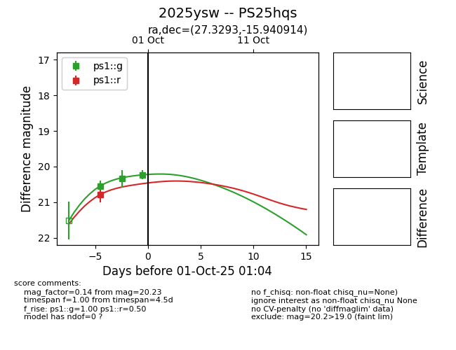
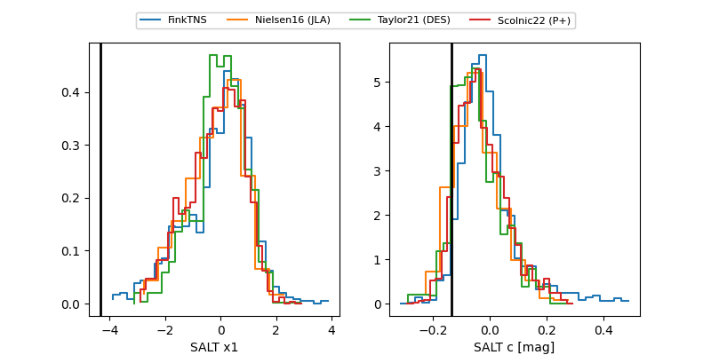

TNS: 2025ysw
YSE: 2025ysw
2025ysw (yse,tns)
PS25hqs (panstarrs)
equatorial (ra, dec) = (27.3293,-15.94091)
galactic (l, b) = (176.0752,-72.52589)


last ps1::g=20.23, ps1::r=20.79
3 ps1::g, 1 ps1::r detections